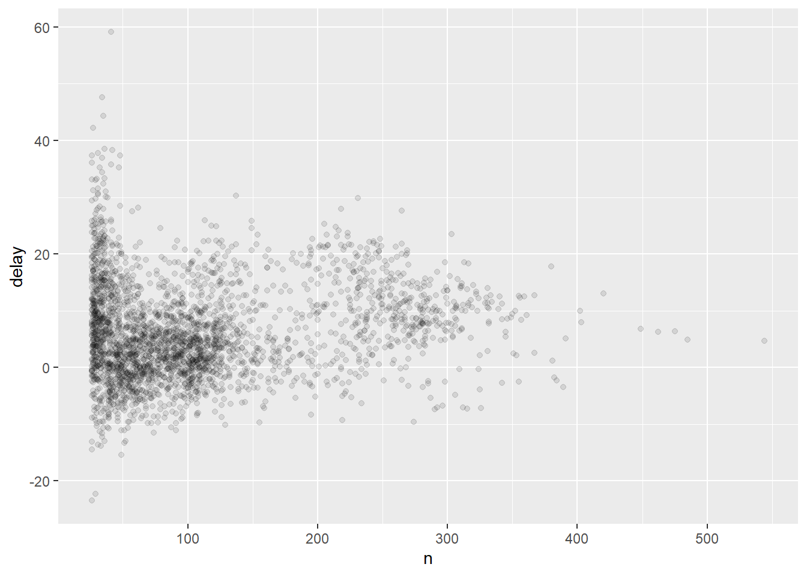

Let’s wrangle some data!
Stuart Demmer
29 July 2018
## Warning: package 'nycflights13' was built under R version 3.6.3#Come again? Data wrangling might sound stragen but we’ve all done it - it’s just the term the guys who made the dplyr package use to refer to data import, transformation, and manipulation. There are methods contained within base R which can perform much of what we will learn here but dplyr’s usability and extensive capabilities are vastly superior. The basic aim here is to learn how to manage data outside of Excel. Excel is great for small jobs but handling large data sets with several filters can be tedious and error prone. coding commands as oppose to manually selecting and copying cell ranges is much more reliable and efficient. Before we start we need to tell R to install the dplyr package because we haven’t got it yet. We can install dplyr individually or we can install a collection of packages which dplyr forms a part of. Let’s opt for the latter. This group of packages is called the tidyverse. This collection of packages can help you with loads of tasks and they all follow a similar manner of coding and can be used interchangably. Let’s install the tidyverse and another package containing some interesting data now:
install.packages("tidyverse")
install.packages("nycflights13")Your computer will connect to the internet and access the packages’ install files and install them to your computer automatically. Once installed we need to load the packages into our current R session. We will only need to install packages once but each time we restart R we will need to load the packages from the library as follows:
library(tidyverse)
library(nycflights12)There you go! All set. Right - now this collection of packages prefers to use something called a tibble as opposed to a data.frame. A quick way to see the difference this makes is by trying it out. Try typing as.data.frame(nycflights13::flights) and then nycflights13::flights into the R console. Pretty crazy right? If it had the space as.data.frame() would have printed all 336 776 rows of this table! A nightmare. tibble objects display useful outputs when called. But suppose we did want to scroll through all those rows - we can use View(nycflights13::flights) (note that V is capitalised). Ther are a couple of other interesting differences between tibble and data.frame but they aren’t important to us right now. Now that we have some big data let’s tinker with it. First let’s have a closer look at what this nycflights13::flights is all about. Basically nycflights13 is a package that contains data about flights departing from New York in 2013. flights then is the tibble containing the data about each flight that left. Type ?flights for a more detailed description if you like. You might have noticed the row of three (or four) letter abbreviations under the column names. These describe the type of each variable:
intstands for integers.
dblstands for doubles, or real numbers.
chrstands for character vectors, or strings.
dttmstands for date-times (a date + a time).
There are three other common types of variables that aren’t used in this dataset but you’ll encounter later in the book:
lglstands for logical, vectors that contain only TRUE or FALSE.
fctrstands for factors, which R uses to represent categorical variables with fixed possible values.
datestands for dates.
Now we’re ready to go. dplyr has five main functions we can use to carry out most of our data exploration, transformation, and summary:
- Pick observations by their values (
filter()).
- Reorder the rows (
arrange()).
- Pick variables by their names (
select()).
- Create new variables with functions of existing variables (
mutate()).
- Collapse many values down to a single summary (
summarise()).
And each of these functions can be used under group_by() which combines unique combinations of selected columns. The above functions are then applied to those groups. As each of these functions carry out ‘activities’ we can call them ‘verbs’. They all work in the same way:
data.frame <- verb(data.frame, ... what to do with data.frame)The verbs
Filtering with filter()
filter() allows you to pull out rows or observations based on requested values. The first arguement is the data.frame we want to filter observations from ad the subsequent arguments are our filtering criteria. Using flights we can look for all the flights that left New York on the 25th of March with:
filter(flights, month == 3, day == 25)## # A tibble: 978 x 19
## year month day dep_time sched_dep_time dep_delay arr_time sched_arr_time
## <int> <int> <int> <int> <int> <dbl> <int> <int>
## 1 2013 3 25 13 2359 14 354 338
## 2 2013 3 25 27 2005 262 313 2330
## 3 2013 3 25 457 500 -3 647 648
## 4 2013 3 25 511 515 -4 809 814
## 5 2013 3 25 534 530 4 814 827
## 6 2013 3 25 540 540 0 844 850
## 7 2013 3 25 542 545 -3 914 923
## 8 2013 3 25 549 600 -11 855 925
## 9 2013 3 25 551 600 -9 702 715
## 10 2013 3 25 551 600 -9 657 733
## # ... with 968 more rows, and 11 more variables: arr_delay <dbl>,
## # carrier <chr>, flight <int>, tailnum <chr>, origin <chr>, dest <chr>,
## # air_time <dbl>, distance <dbl>, hour <dbl>, minute <dbl>, time_hour <dttm>What this has done is printed out the result of that filtering request but we haven’t saved any of that data, only called and printed it. To save it we could do:
mar25 <- filter(flights, month == 3, day == 25)
View(mar25)Notice this == rather than just =. We need to do this becuase = is very similar to <- - they both assign alues to argument variables or objects. == is one of the logical comparrison operators. The others include:
>less than
>=less than or equal to
<greater than
<=greater than or equal to
!=not equal to
&and
|or
We can use these last two operators to join several logical comparrisons together. For istance:
filter(flights, month == 11 | month == 12)## # A tibble: 55,403 x 19
## year month day dep_time sched_dep_time dep_delay arr_time sched_arr_time
## <int> <int> <int> <int> <int> <dbl> <int> <int>
## 1 2013 11 1 5 2359 6 352 345
## 2 2013 11 1 35 2250 105 123 2356
## 3 2013 11 1 455 500 -5 641 651
## 4 2013 11 1 539 545 -6 856 827
## 5 2013 11 1 542 545 -3 831 855
## 6 2013 11 1 549 600 -11 912 923
## 7 2013 11 1 550 600 -10 705 659
## 8 2013 11 1 554 600 -6 659 701
## 9 2013 11 1 554 600 -6 826 827
## 10 2013 11 1 554 600 -6 749 751
## # ... with 55,393 more rows, and 11 more variables: arr_delay <dbl>,
## # carrier <chr>, flight <int>, tailnum <chr>, origin <chr>, dest <chr>,
## # air_time <dbl>, distance <dbl>, hour <dbl>, minute <dbl>, time_hour <dttm>returns all flights which departed in either November or December 2013.
filter(flights, month == 11 & month == 12)## # A tibble: 0 x 19
## # ... with 19 variables: year <int>, month <int>, day <int>, dep_time <int>,
## # sched_dep_time <int>, dep_delay <dbl>, arr_time <int>,
## # sched_arr_time <int>, arr_delay <dbl>, carrier <chr>, flight <int>,
## # tailnum <chr>, origin <chr>, dest <chr>, air_time <dbl>, distance <dbl>,
## # hour <dbl>, minute <dbl>, time_hour <dttm>The above query, however, produces nothing because a single flight cannot depart in two months. Sometimes you might import data which contains NA (“not applicable”) or NAN (“not a number”) values. These will almost always through out your analyses and so dealing with them from the start is incredibly important. The best way to handle these data is to remove them from the data set. You can do this with is.na():
filter(flights, !is.na(dep_time ))## # A tibble: 328,521 x 19
## year month day dep_time sched_dep_time dep_delay arr_time sched_arr_time
## <int> <int> <int> <int> <int> <dbl> <int> <int>
## 1 2013 1 1 517 515 2 830 819
## 2 2013 1 1 533 529 4 850 830
## 3 2013 1 1 542 540 2 923 850
## 4 2013 1 1 544 545 -1 1004 1022
## 5 2013 1 1 554 600 -6 812 837
## 6 2013 1 1 554 558 -4 740 728
## 7 2013 1 1 555 600 -5 913 854
## 8 2013 1 1 557 600 -3 709 723
## 9 2013 1 1 557 600 -3 838 846
## 10 2013 1 1 558 600 -2 753 745
## # ... with 328,511 more rows, and 11 more variables: arr_delay <dbl>,
## # carrier <chr>, flight <int>, tailnum <chr>, origin <chr>, dest <chr>,
## # air_time <dbl>, distance <dbl>, hour <dbl>, minute <dbl>, time_hour <dttm>This code filters all records where the dep_time is not NA With all that i think you are ready for a quick exercise:
Quiz time
- Find all flights that
1.1 Had an arrival delay of two or more hours1.2 Flew to Houston (
IAHorHOUare Houston’s two airport codes)1.3 Were operated by United, American, or Delta airlines
1.4 Departed in summer (July, August, and September for Northern Hemisphere countries)
1.5 Arrived more than two hours late, but did not depart late
1.6 Were delayed by at least one hour, but made up over 30 minutes in flight
1.7 Departed between midnight (00:00) and 06:00
Answer
1.1filter(flights, arr_delay > 120)1.2
filter(flights, dest == "IAH" | dest == "HOU"1.3
filter(flights, carrier == "UA" | carrier == "AA" | carrier == "DL"1.4
filter(flights, month == 6 | month == 7 | month == 8
or alternativelyfilter(flights, month <5 & month > 91.5
filter(flights, dep_delay < 1 & arr_delay > 1201.6
filter(flights, dep_delay > 60 & arr_delay < 30)1.7
filter(flights, dep_time > 0 & dep_time < 360
- What does
between()do?Answer
This is a shortcut for x >= left & x <= right, implemented efficiently in C++ for local values, and translated to the appropriate SQL for remote tables.- Select all flights which have a missing
dep_time. Are there any other variables with missing data? What might these rows represent?Answer
filter(flights, is.na(dep_time)
Arranging with arrange()
The general principles here are very similar to filter() except that insted of returning selected rows which meet the filter() conditions, all rows are returned but their order is shuffled around. When using more than one column to order by each additional column will be subsetted within the previous. For example:
options(tibble.print_max = 30)
print(arrange(flights, year, month, day, dep_time), n = 20)## # A tibble: 336,776 x 19
## year month day dep_time sched_dep_time dep_delay arr_time sched_arr_time
## <int> <int> <int> <int> <int> <dbl> <int> <int>
## 1 2013 1 1 517 515 2 830 819
## 2 2013 1 1 533 529 4 850 830
## 3 2013 1 1 542 540 2 923 850
## 4 2013 1 1 544 545 -1 1004 1022
## 5 2013 1 1 554 600 -6 812 837
## 6 2013 1 1 554 558 -4 740 728
## 7 2013 1 1 555 600 -5 913 854
## 8 2013 1 1 557 600 -3 709 723
## 9 2013 1 1 557 600 -3 838 846
## 10 2013 1 1 558 600 -2 753 745
## 11 2013 1 1 558 600 -2 849 851
## 12 2013 1 1 558 600 -2 853 856
## 13 2013 1 1 558 600 -2 924 917
## 14 2013 1 1 558 600 -2 923 937
## 15 2013 1 1 559 600 -1 941 910
## 16 2013 1 1 559 559 0 702 706
## 17 2013 1 1 559 600 -1 854 902
## 18 2013 1 1 600 600 0 851 858
## 19 2013 1 1 600 600 0 837 825
## 20 2013 1 1 601 600 1 844 850
## # ... with 3.368e+05 more rows, and 11 more variables: arr_delay <dbl>,
## # carrier <chr>, flight <int>, tailnum <chr>, origin <chr>, dest <chr>,
## # air_time <dbl>, distance <dbl>, hour <dbl>, minute <dbl>, time_hour <dttm>Here the flights are ordered by year (only 2013), month (only January shows on this output), then within January we can see day 1 and then within day 1 we see the earliest flight (this was at 05:17) and so on. You could do the opposite and order the rows in decending order using desc() to tell arrange() to produce the oposite:
print(arrange(flights, desc(year), desc(month), desc(day), desc(dep_time)), n = 20)## # A tibble: 336,776 x 19
## year month day dep_time sched_dep_time dep_delay arr_time sched_arr_time
## <int> <int> <int> <int> <int> <dbl> <int> <int>
## 1 2013 12 31 2356 2359 -3 436 445
## 2 2013 12 31 2355 2359 -4 430 440
## 3 2013 12 31 2332 2245 47 58 3
## 4 2013 12 31 2328 2330 -2 412 409
## 5 2013 12 31 2321 2250 31 46 8
## 6 2013 12 31 2310 2255 15 7 2356
## 7 2013 12 31 2245 2250 -5 2359 2356
## 8 2013 12 31 2235 2245 -10 2351 2355
## 9 2013 12 31 2218 2219 -1 315 304
## 10 2013 12 31 2211 2159 12 100 45
## 11 2013 12 31 2206 2110 56 44 2339
## 12 2013 12 31 2159 2155 4 55 46
## 13 2013 12 31 2155 2039 76 253 2355
## 14 2013 12 31 2155 2150 5 110 51
## 15 2013 12 31 2152 2155 -3 2325 2334
## 16 2013 12 31 2141 2145 -4 29 19
## 17 2013 12 31 2138 2141 -3 50 37
## 18 2013 12 31 2134 2135 -1 21 19
## 19 2013 12 31 2132 2130 2 41 18
## 20 2013 12 31 2128 2135 -7 101 55
## # ... with 3.368e+05 more rows, and 11 more variables: arr_delay <dbl>,
## # carrier <chr>, flight <int>, tailnum <chr>, origin <chr>, dest <chr>,
## # air_time <dbl>, distance <dbl>, hour <dbl>, minute <dbl>, time_hour <dttm>If you are looking for any NA values you will find them at the bottom of your table. arrange() doesn’t know what these are so it can’t sort them into any particular order…
Quiz time
- How could you use
arrange()to sort all missing values withinflightsto the start? (is.na()will be useful)Answer
arrange(flights, !is.na(dep_time))orarrange(flights, desc(is.na(dep_time)))- Sort
flightsto find the most delayed flights.Answer
arrange(flights, desc(dep_delay))- Sort
flightsto find the fastest flights.Answer
arrange(flights, distance/air_time)- Order by which flights flew the greatest distance.
Answer
arrange(flights, distance)
Selectively selecting columns with select()
We might not always have a use for this function but we will go over it quickly. Suppose you have a data.frame with only a few columns that you want out of the whole thing - like this flights data set. Perhaps we are only interested in which airline had the greatest delays. We could narrow our data.frame down by calling:
select(flights, dep_delay, arr_delay, carrier)## # A tibble: 336,776 x 3
## dep_delay arr_delay carrier
## <dbl> <dbl> <chr>
## 1 2 11 UA
## 2 4 20 UA
## 3 2 33 AA
## 4 -1 -18 B6
## 5 -6 -25 DL
## 6 -4 12 UA
## 7 -5 19 B6
## 8 -3 -14 EV
## 9 -3 -8 B6
## 10 -2 8 AA
## # ... with 336,766 more rows## by ordering our columns we can quickly reorder our new data.frame:
select(flights, carrier, dep_delay, arr_delay)## # A tibble: 336,776 x 3
## carrier dep_delay arr_delay
## <chr> <dbl> <dbl>
## 1 UA 2 11
## 2 UA 4 20
## 3 AA 2 33
## 4 B6 -1 -18
## 5 DL -6 -25
## 6 UA -4 12
## 7 B6 -5 19
## 8 EV -3 -14
## 9 B6 -3 -8
## 10 AA -2 8
## # ... with 336,766 more rows## some other useful functions of select():
select(flights, year:dep_time) ## selects all columns between and including the requested## # A tibble: 336,776 x 4
## year month day dep_time
## <int> <int> <int> <int>
## 1 2013 1 1 517
## 2 2013 1 1 533
## 3 2013 1 1 542
## 4 2013 1 1 544
## 5 2013 1 1 554
## 6 2013 1 1 554
## 7 2013 1 1 555
## 8 2013 1 1 557
## 9 2013 1 1 557
## 10 2013 1 1 558
## # ... with 336,766 more rowsselect(flights, -(carrier:time_hour)) ## returns all but those mentioned in the query## # A tibble: 336,776 x 9
## year month day dep_time sched_dep_time dep_delay arr_time sched_arr_time
## <int> <int> <int> <int> <int> <dbl> <int> <int>
## 1 2013 1 1 517 515 2 830 819
## 2 2013 1 1 533 529 4 850 830
## 3 2013 1 1 542 540 2 923 850
## 4 2013 1 1 544 545 -1 1004 1022
## 5 2013 1 1 554 600 -6 812 837
## 6 2013 1 1 554 558 -4 740 728
## 7 2013 1 1 555 600 -5 913 854
## 8 2013 1 1 557 600 -3 709 723
## 9 2013 1 1 557 600 -3 838 846
## 10 2013 1 1 558 600 -2 753 745
## # ... with 336,766 more rows, and 1 more variable: arr_delay <dbl>What I have found is select()’s most useful function is its simple renaming ability:
select(flights, tail.num = tailnum) ## returns the selected column (tail_num) and gives it a new name (tail.num). This is great but only returns the selected columns. rename() is a function that returns all columns and applies the requested renaming:## # A tibble: 336,776 x 1
## tail.num
## <chr>
## 1 N14228
## 2 N24211
## 3 N619AA
## 4 N804JB
## 5 N668DN
## 6 N39463
## 7 N516JB
## 8 N829AS
## 9 N593JB
## 10 N3ALAA
## # ... with 336,766 more rowsrename(flights, tail.num = tailnum)## # A tibble: 336,776 x 19
## year month day dep_time sched_dep_time dep_delay arr_time sched_arr_time
## <int> <int> <int> <int> <int> <dbl> <int> <int>
## 1 2013 1 1 517 515 2 830 819
## 2 2013 1 1 533 529 4 850 830
## 3 2013 1 1 542 540 2 923 850
## 4 2013 1 1 544 545 -1 1004 1022
## 5 2013 1 1 554 600 -6 812 837
## 6 2013 1 1 554 558 -4 740 728
## 7 2013 1 1 555 600 -5 913 854
## 8 2013 1 1 557 600 -3 709 723
## 9 2013 1 1 557 600 -3 838 846
## 10 2013 1 1 558 600 -2 753 745
## # ... with 336,766 more rows, and 11 more variables: arr_delay <dbl>,
## # carrier <chr>, flight <int>, tail.num <chr>, origin <chr>, dest <chr>,
## # air_time <dbl>, distance <dbl>, hour <dbl>, minute <dbl>, time_hour <dttm>One more useful function combination is select(... , everything()) which brings selected columns to the beginning of the data.frame and then places everthing else subsequent to those:
select(flights, time_hour, air_time, everything()) ## # A tibble: 336,776 x 19
## time_hour air_time year month day dep_time sched_dep_time
## <dttm> <dbl> <int> <int> <int> <int> <int>
## 1 2013-01-01 05:00:00 227 2013 1 1 517 515
## 2 2013-01-01 05:00:00 227 2013 1 1 533 529
## 3 2013-01-01 05:00:00 160 2013 1 1 542 540
## 4 2013-01-01 05:00:00 183 2013 1 1 544 545
## 5 2013-01-01 06:00:00 116 2013 1 1 554 600
## 6 2013-01-01 05:00:00 150 2013 1 1 554 558
## 7 2013-01-01 06:00:00 158 2013 1 1 555 600
## 8 2013-01-01 06:00:00 53 2013 1 1 557 600
## 9 2013-01-01 06:00:00 140 2013 1 1 557 600
## 10 2013-01-01 06:00:00 138 2013 1 1 558 600
## # ... with 336,766 more rows, and 12 more variables: dep_delay <dbl>,
## # arr_time <int>, sched_arr_time <int>, arr_delay <dbl>, carrier <chr>,
## # flight <int>, tailnum <chr>, origin <chr>, dest <chr>, distance <dbl>,
## # hour <dbl>, minute <dbl>Quiz time
- Think of as many ways as possible to select
dep_time,dep_delay,arr_time, andarr_delayfromflights.
- What happens if you include the name of a variable multiple times in a
select()call?
- What does the
one_of()function do in combination withselect()? How could you use it withvars <- c("year", "month", "day", "dep_delay", "arr_delay")?
- Does the result of running
select(flights, contains("TIME"))surprise you? How do the select helpers deal with case by default? How can you change that default?
Answer
HINT: have a look at the arguments thatcontains()(and otherselect_helperstype functions) can select.
Mutating isn’t just for genetics
mutate() is a pretty neat funcion that can really speed up generating new variables from columns already present in your data.frame. It works in a similar way to everything else we’ve used so far. The basic call is mutate(data.frame, new.column.name = column.3 * column.5). The new column always gets attached to your data.frame at the end so it is sometimes useful to select relavant columns first and then mutate those:
flights.sml <- select(flights,
year:day,
ends_with("delay"),
distance, air_time)
mutate(flights.sml,
gain = dep_delay - arr_delay,
speed = distance / air_time * 60)## # A tibble: 336,776 x 9
## year month day dep_delay arr_delay distance air_time gain speed
## <int> <int> <int> <dbl> <dbl> <dbl> <dbl> <dbl> <dbl>
## 1 2013 1 1 2 11 1400 227 -9 370.
## 2 2013 1 1 4 20 1416 227 -16 374.
## 3 2013 1 1 2 33 1089 160 -31 408.
## 4 2013 1 1 -1 -18 1576 183 17 517.
## 5 2013 1 1 -6 -25 762 116 19 394.
## 6 2013 1 1 -4 12 719 150 -16 288.
## 7 2013 1 1 -5 19 1065 158 -24 404.
## 8 2013 1 1 -3 -14 229 53 11 259.
## 9 2013 1 1 -3 -8 944 140 5 405.
## 10 2013 1 1 -2 8 733 138 -10 319.
## # ... with 336,766 more rows##Note how I have reformatted these commands - that makes it much easier to see the individual arguments of each function.And you can even refer to columns that you have just made within the same mutate() call:
## # A tibble: 336,776 x 10
## year month day dep_delay arr_delay distance air_time gain hours
## <int> <int> <int> <dbl> <dbl> <dbl> <dbl> <dbl> <dbl>
## 1 2013 1 1 2 11 1400 227 -9 3.78
## 2 2013 1 1 4 20 1416 227 -16 3.78
## 3 2013 1 1 2 33 1089 160 -31 2.67
## 4 2013 1 1 -1 -18 1576 183 17 3.05
## 5 2013 1 1 -6 -25 762 116 19 1.93
## 6 2013 1 1 -4 12 719 150 -16 2.5
## 7 2013 1 1 -5 19 1065 158 -24 2.63
## 8 2013 1 1 -3 -14 229 53 11 0.883
## 9 2013 1 1 -3 -8 944 140 5 2.33
## 10 2013 1 1 -2 8 733 138 -10 2.3
## # ... with 336,766 more rows, and 1 more variable: gain_per_hour <dbl>And then suppose only the new variables that you have made are useful to you then transmute() is what you are looking for:
transmute(flights,
gain = dep_delay - arr_delay,
hours = air_time / 60,
gain_per_hour = gain / hours)## # A tibble: 336,776 x 3
## gain hours gain_per_hour
## <dbl> <dbl> <dbl>
## 1 -9 3.78 -2.38
## 2 -16 3.78 -4.23
## 3 -31 2.67 -11.6
## 4 17 3.05 5.57
## 5 19 1.93 9.83
## 6 -16 2.5 -6.4
## 7 -24 2.63 -9.11
## 8 11 0.883 12.5
## 9 5 2.33 2.14
## 10 -10 2.3 -4.35
## # ... with 336,766 more rowsYou can use all sorts of functions together with mutate to create new variables quickly, efficiently, and most importantly, without ever needing Excel again! To quickly calculate the proportion of something you could do something / sum (something) for instance. Or to find the differece from the mean you could do:
mutate(flights, mean.diff.arr_delay = arr_delay - mean(arr_delay))## # A tibble: 336,776 x 20
## year month day dep_time sched_dep_time dep_delay arr_time sched_arr_time
## <int> <int> <int> <int> <int> <dbl> <int> <int>
## 1 2013 1 1 517 515 2 830 819
## 2 2013 1 1 533 529 4 850 830
## 3 2013 1 1 542 540 2 923 850
## 4 2013 1 1 544 545 -1 1004 1022
## 5 2013 1 1 554 600 -6 812 837
## 6 2013 1 1 554 558 -4 740 728
## 7 2013 1 1 555 600 -5 913 854
## 8 2013 1 1 557 600 -3 709 723
## 9 2013 1 1 557 600 -3 838 846
## 10 2013 1 1 558 600 -2 753 745
## # ... with 336,766 more rows, and 12 more variables: arr_delay <dbl>,
## # carrier <chr>, flight <int>, tailnum <chr>, origin <chr>, dest <chr>,
## # air_time <dbl>, distance <dbl>, hour <dbl>, minute <dbl>, time_hour <dttm>,
## # mean.diff.arr_delay <dbl>There are plenty of other specifically designed funcitons for mutate() for generating cumulative frequencies, ranked data, log transformations and even somthing called modular arithmatic! We will skip the quiz for this verb but i encourage you to read the documentation on mutate().
Summaries made easy with summarise()!
This is the last main dplyr function we will look at in this workshop. At first you might think it’s pretty lame:
summarise(flights, delay = mean(dep_delay, na.rm = TRUE)) ## na.rm is a boolean argument addressing what to do with, well, NA's. rm() is a base R function which removes any object from your environment.## # A tibble: 1 x 1
## delay
## <dbl>
## 1 12.6But wait until you use it with group_by(). This function creates new mini datasets within your data.frame which summarise then acts on:
by.day <- group_by(flights, year, month, day)
summarise(by.day, delay = mean(dep_delay, na.rm = TRUE))## # A tibble: 365 x 4
## # Groups: year, month [12]
## year month day delay
## <int> <int> <int> <dbl>
## 1 2013 1 1 11.5
## 2 2013 1 2 13.9
## 3 2013 1 3 11.0
## 4 2013 1 4 8.95
## 5 2013 1 5 5.73
## 6 2013 1 6 7.15
## 7 2013 1 7 5.42
## 8 2013 1 8 2.55
## 9 2013 1 9 2.28
## 10 2013 1 10 2.84
## # ... with 355 more rowsThis is a great way to create a quic ksummary view of your dataset based on treatments (for each day of the year in this case). But there is something a little tedious about the way we have been writing our code here which might only be becoming apparant now. Every time we use a dplyr function we have to tell it what data.frame to look at. But how often will we look for data between data.frames? Very unlikely. The annoying thing is that each time we want to use a new function we need to create a new data.frame and so we are stuck typing the name out every time. Even for small summaries this is a headache. That’s where this amazing new idea comes into the picture. Meet the pipe: %>%
Piping 101
Suppose we wanted to delve a little deeper into the relationship between the distance and average delay for each location:
by_dest <- group_by(flights, dest)
delay <- summarise(by_dest,
count = n(),
dist = mean(distance, na.rm = TRUE),
delay = mean(arr_delay, na.rm = TRUE)
)
delay <- filter(delay, count > 20, dest != "HNL")
# It looks like delays increase with distance up to ~750 miles
# and then decrease. Maybe as flights get longer there's more
# ability to make up delays in the air?## `geom_smooth()` using method = 'loess' and formula 'y ~ x'
There are three broad steps to getting our data into this form: 1. Group flights by destination and save these as by_dest. 2. Summarise the distance, average delay, and number of flights and save this as delay. 3. Overwrite delay by filtering out the noisy points (the outliers) What we are left with are a bunch of unused data.frames which we aren’t really interested in. We end up spending time naming arbitrary objects which wastes our time and clutters up our environment. But luckily there are some pretty smart people who also don’t like doing this and so they developed the pipe, %>%. We can do the same operation as:
delays <- flights %>%
group_by(dest) %>%
summarise(
count = n(),
dist = mean(distance, na.rm = TRUE),
delay = mean(arr_delay, na.rm = TRUE)
) %>%
filter(count > 20, dest != "HNL")
ggplot(data = delay, mapping = aes(x = dist, y = delay)) +
geom_point(aes(size = count), alpha = 1/3) +
geom_smooth(se = FALSE)## `geom_smooth()` using method = 'loess' and formula 'y ~ x'
Writing our code like this keeps our focus on what’s important, the data transformations themselves rather than what variable is being transformed. The important difference to note is that we start with the biggest object and then whittle it down into something smaller. We also don’t need to refer to where the data are coming from within each function anymore because the %>% tells the new function to look at the result of the previous function to know what to use.
Counts
An important part of any summary is knowing how many observations the summary is based on. Is this mean value the result of 3 or 300 observations (the latter is probably more reliable I suspect). Let’s see this in practice by checking which individual planes (referenced by their tail number) have the longest average delay:
## just some sorting out here. I am getting all the flights that were not cancelled (cancelled flights are those which have NA values):
not_cancelled <- flights %>%
filter(!is.na(dep_delay), !is.na(arr_delay))
## quickly summarise these to get the average depature delay:
not_cancelled %>%
group_by(year, month, day) %>%
summarise(mean = mean(dep_delay))## # A tibble: 365 x 4
## # Groups: year, month [12]
## year month day mean
## <int> <int> <int> <dbl>
## 1 2013 1 1 11.4
## 2 2013 1 2 13.7
## 3 2013 1 3 10.9
## 4 2013 1 4 8.97
## 5 2013 1 5 5.73
## 6 2013 1 6 7.15
## 7 2013 1 7 5.42
## 8 2013 1 8 2.56
## 9 2013 1 9 2.30
## 10 2013 1 10 2.84
## # ... with 355 more rowsdelays <- not_cancelled %>%
group_by(tailnum) %>%
summarise(
delay = mean(arr_delay)
)
ggplot(data = delays, mapping = aes(x = delay)) +
geom_density()This looks like planes from South Africa, some planes have average delays of five hours (300 minutes)! But this seems like a bit extreme. If we incorporate the number of flights vs. average delay we could get a somewhat clearer picture:
delays <- not_cancelled %>%
group_by(tailnum) %>%
summarise(
delay = mean(arr_delay, na.rm = TRUE),
n = n()
)
ggplot(data = delays, mapping = aes(x = n, y = delay)) +
geom_point(alpha = 1/10)
It isn’t really surprising that the fewer the total number of flights the greater the variation in the average delay. Generally the variation seems to decrease as the sample size increases. To get around all this noise and to get to the real trends it is helpful to filter out the mean points which have fewer points: 
Other useful summary functions
Mean, counts and summaries can be useful to include but we can produce summaries of so many more things and print them out in our same table:
not_cancelled %>%
group_by(year, month, day) %>%
summarise(
avg_delay = mean(arr_delay),
med_delay = median(arr_delay),
sd_delay = sd(arr_delay)
)## # A tibble: 365 x 6
## # Groups: year, month [12]
## year month day avg_delay med_delay sd_delay
## <int> <int> <int> <dbl> <dbl> <dbl>
## 1 2013 1 1 12.7 3 49.3
## 2 2013 1 2 12.7 4 41.5
## 3 2013 1 3 5.73 1 35.6
## 4 2013 1 4 -1.93 -8 30.7
## 5 2013 1 5 -1.53 -7 27.6
## 6 2013 1 6 4.24 -1 27.4
## 7 2013 1 7 -4.95 -10 29.7
## 8 2013 1 8 -3.23 -7 23.2
## 9 2013 1 9 -0.264 -6 48.3
## 10 2013 1 10 -5.90 -11 45.4
## # ... with 355 more rowsI have just attempted to summarise a massive chapter on summarising into what I think would be useful for us to know as biologists. But to make sure you are getting it and are fluent with data transfomation and data wrangling I would really encourage you to check out this chapter online.